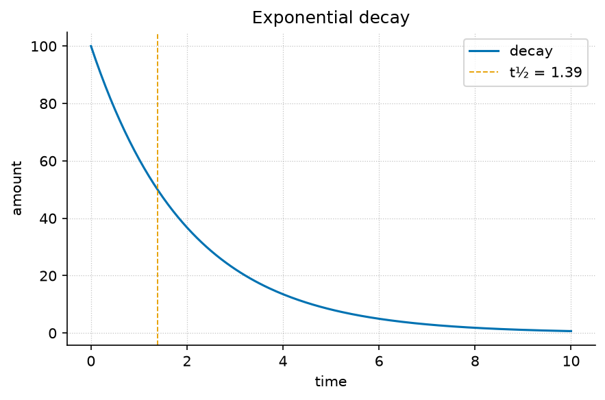

14 Regulation and Control

Guided study · Prerequisites: basic arithmetic and the preceding unit’s vocabulary
14.0.1 Study Blueprint
- Big idea: Regulation is a declared relationship between a measured error and an action, with assumptions about timing and limits.
- Core concepts: feedback, regulation, state, equilibrium.
- Quantitative lens: eq. 10.
- Data skill: Keep the controller law, plant law and measurement rule separate before deriving a closed-loop response.
- Common misconception to repair: Drawing a negative-feedback loop does not prove that it is stable.
- Primary lab: sec. 27.
- Question bank: sec. 39.
- Bridge to computation:
textbook.models.exponential_decay.
14.1 Learning Objectives
- Define a setpoint, measured state and error.
- Derive ideal proportional error decay for an integrator plant.
- Identify why delay, saturation or noise invalidates the ideal response.
Opening example. An ideal controller sees a positive gap between a tank level and its target and adds fluid in proportion to that gap. Near the target it acts more gently. A real controller must also wait for measurements, respect pump limits and cope with leakage. The ideal curve is useful because those additional influences can be named as departures from its assumptions.
14.2 Define the error
Let a constant setpoint be \(s\), the measured state be \(y(t)\) and the signed error be \(e(t)=s-y(t)\). A positive error means the measured state lies below the target under this convention. Sign conventions are part of the interface: reversing the error without changing the action law can turn corrective action into reinforcing action. Write the convention before tuning a gain. Also state whether the controller acts on a measured state, a delayed observation or an estimate, since those cases are different closed-loop systems.
14.3 Derive the ideal response
For an ideal integrator plant, \(dy/dt=u\), and proportional action is \(u=ke\) with positive gain \(k\). With a fixed target, differentiating the error gives \(de/dt=-ke\). For an initially positive gap its magnitude is exactly the exponential decay computed by the helper with rate \(k\). This derivation links a controller, a plant and a trajectory; none of the three can be inferred from the trajectory alone. The worked equation applies to this narrowly specified ideal case and does not establish the behavior of an arbitrary controller.
14.4 Gain trades time for other constraints
In the ideal model, a larger positive gain reduces the half-life and leaves the asymptotic error at zero. The physical action initially equals gain times error. Increasing gain can therefore require a pump or actuator capacity that the real system does not have. If action is clipped at a maximum, early-time behavior follows another law and the single exponential no longer describes the full response. State the capacity limit before claiming a faster response from a larger numerical gain. A tested formula cannot remove a physical bound.
14.5 Timing can change the system
The ideal derivation uses the current error continuously. A sampled controller acts at intervals, and a delayed sensor supplies an earlier state. These changes can produce overshoot or instability depending on the actual update law. Nyquist’s analysis (Nyquist 1932) gives primary historical treatment of stability for specified feedback systems. Here the important habit is to state the delay and sampling assumptions explicitly. A diagram conveys the connections, but a stability conclusion requires the corresponding mathematics and a domain of parameter values.
14.6 Evaluate the disturbance story
A constant leak, varying target or noisy observation changes the error dynamics. Ask which disturbance is relevant before selecting a more elaborate controller. For example, an ideal action that decays toward zero cannot offset a continuing unmodeled leak while maintaining the target. The lab first verifies the ideal halving sequence, then asks why an observed plateau would challenge the no-disturbance assumption. Keeping a failed prediction in the record supports model revision; quietly replacing its parameters after observing the plateau does not establish that the original controller model was adequate.
14.7 A Worked Formalism
\[ e(t)=e_0e^{-\lambda t},\qquad t_{1/2}=\frac{\ln 2}{\lambda} \qquad{(10)}\]
| Symbol | Meaning | Units |
|---|---|---|
| \(e(t)\) | Non-negative quantity or error magnitude | quantity |
| \(e_0\) | Initial magnitude | quantity |
| \(\lambda\) | Constant positive decay rate | inverse time |
| \(t_{1/2}\) | Time to halve the magnitude | time |
Setting the remaining amount to half its initial value gives \(e^{-\lambda t}=1/2\). Taking logarithms yields the half-life in the equation. At rate one half per time unit, the half-life is about \(1.386\) time units. Starting at one hundred, successive half-lives give fifty and twenty-five; equal time intervals remove equal fractions, not equal amounts.
import numpy as np
from textbook.models import exponential_decay, half_life
rate = 0.5
t_half = half_life(rate)
values = exponential_decay([0.0, t_half, 2*t_half], initial=100.0, rate=rate)
assert np.allclose(values, [100.0, 50.0, 25.0])
print(t_half, values)The equation is evaluated by the tested
textbook.models.exponential_decay. The assertions above are
independent expectations for this designed example; the displayed figure
in fig. 9 is a
deterministic illustration with its own explicitly stated inputs, not
evidence collected from the opening scenario.
14.8 Assumptions and Limits
The model assumes a constant fractional loss rate with no replenishment. For a feedback interpretation it also assumes a continuous, undelayed ideal controller with an unsaturated actuator. A changing rate, external input or measurement delay breaks the closed-form description. The function permits zero rate as a constant trajectory, but half-life requires a strictly positive rate.
flowchart LR
Q[Question and observation rule] --> I[Declared inputs and units]
I --> M[Tested model]
M --> P[Predicted quantities]
P --> C[Independent comparison]
C -->|record a revision| QThis diagram records the direction of a modeling workflow. An arrow names a relationship to specify; it does not add an unimplemented physical mechanism. Keep the original prediction when making the recorded revision.
14.9 Summary
Regulation is a declared relationship between a measured error and an action, with assumptions about timing and limits. The worked example makes a narrow quantitative claim that can be checked with exact inputs and a tested function. Drawing a negative-feedback loop does not prove that it is stable. State the assumptions, preserve the observation record and choose a comparison that can distinguish an arithmetic error from an inadequate model. Those habits make a result inspectable without expanding what its evidence establishes.
14.10 Key Terms
feedback, regulation, state, equilibrium.
14.11 Further Reading
Nyquist (Nyquist 1932) treats feedback stability for defined systems; compare the conditions in that analysis with the ideal no-delay derivation here.